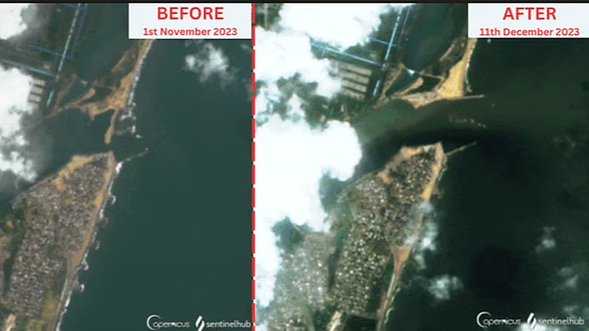
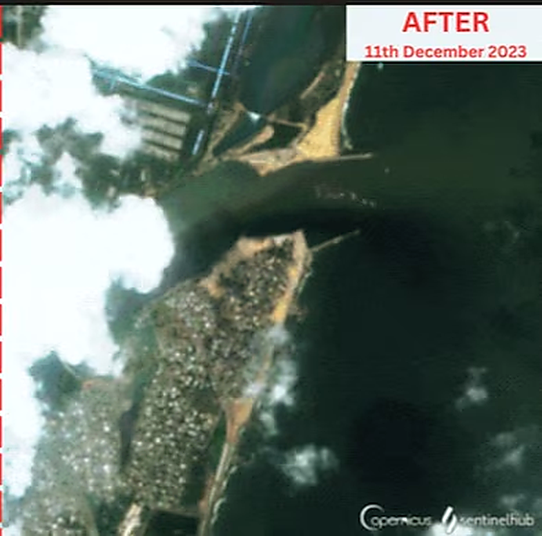

Explore an illustrative response sequence based on the historical Ennore before-and-after image.


Map-style render is generated in your browser from the photo’s colours. It is a visual aid, not survey data.